Aperture and depth of field
That soft, blurry background that makes a shot look expensive isn’t a filter someone added later. It comes from a hole in the lens, and how big you make it.
Start here
What changed?
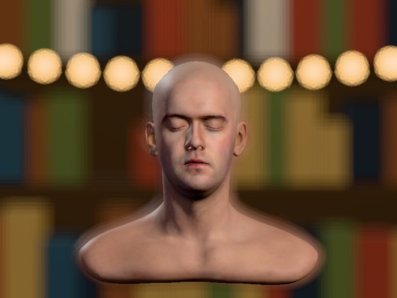
Same camera, same lens, same spot. What changed between picture A and picture B?
Try it
Open it. Close it.
The same 3D head from the lighting lesson, now with a bookshelf and a string of lights behind him, seen through a pretend lens. Drag the Aperture slider and watch the background. The little drawing beside the f-number is the hole inside the lens opening and closing.
What you just did
The aperture is a hole.
Inside every lens is a ring of thin metal blades, called the iris. They slide together to make the hole smaller, or apart to make it bigger. The size of that hole is the aperture, and it’s measured in f-stops.
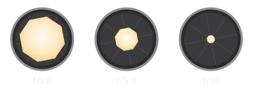
The f-number is a fraction (the lens’s focal length divided by the width of the hole), which is why bigger numbers mean smaller holes. You don’t need the math. You need the full stops in order: f/1.4, 2, 2.8, 4, 5.6, 8, 11, 16, 22. Each step to the right cuts the light in half. Each step to the left doubles it.
Depth of field
How much is sharp.
Depth of field is how much of the picture, front to back, looks sharp. A wide aperture gives you a shallow depth of field: the face sharp, everything behind it soft. A tiny aperture gives you a deep one: sharp from front to back. Same head, same shelf:
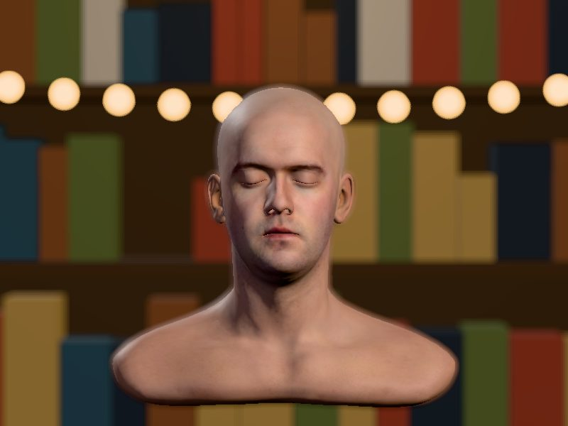
The other half
Distance matters just as much.
The f-stop isn’t the only thing that decides the blur. How far the background is behind the person matters just as much. Same f/2.8 in all three of these. Only the shelf moved:
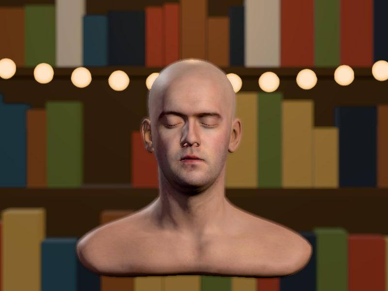
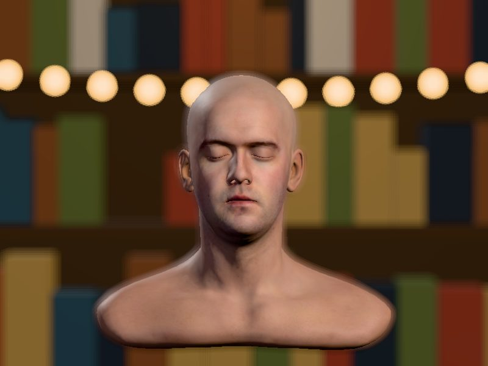
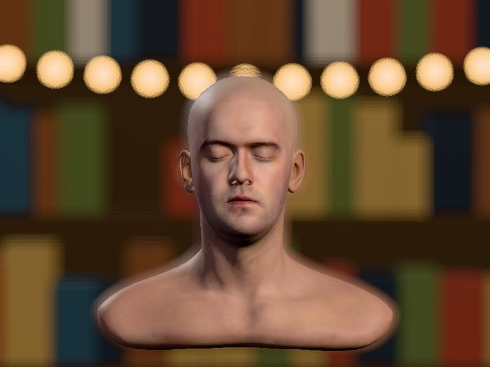
This is the trick for phones. Most phone cameras have a fixed aperture: you can’t change the hole at all. So you change the distances instead. Pull the person away from the wall, and move the phone closer to them.
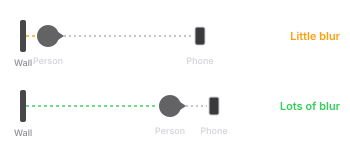
The catch
Light isn’t free.
Close the aperture to get everything sharp and you’re letting in far less light. From f/2.8 to f/16 is five stops, which is about 1/32 of the light. Something has to make that up. On auto, your camera usually raises the ISO, and high ISO brings grain.
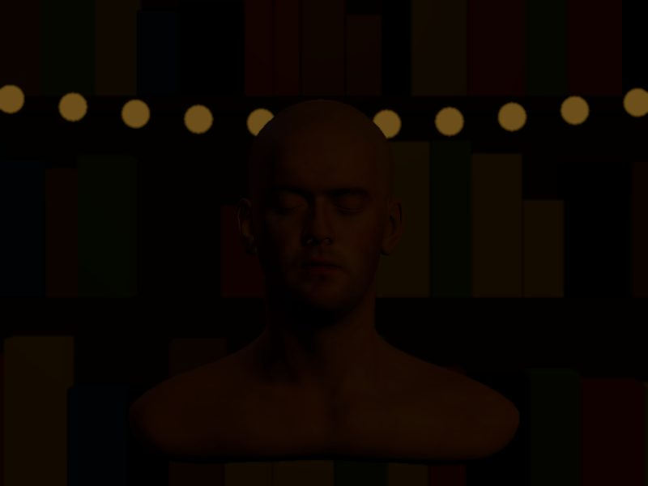
What you’ll shoot with
Where the aperture lives.
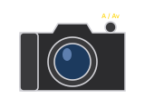
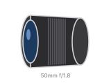
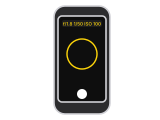
Portrait and Cinematic modes on phones fake the blur in software. They’re pretty good now, and they still get confused by hair and glasses. Real distance never does.
Try it at home
Two shots, one friend.
- Stand a friend right up against a wall with some stuff on it: a shelf, posters, lights. Back up and take a photo of their face.
- Now have them walk ten feet away from the wall. Walk up close to them so their face fills the same amount of the frame. Take another.
- If you have a camera, put it on A or Av, and take both shots again at the lowest f-number your lens has, then at f/11.
- Put them side by side. The blurriest background wins.
Five questions
Check yourself.
Up next in Camera
Shutter speed and frame rate.
The other way to control light, and why a spinning fan looks different at 1/50 and 1/1000. That lesson isn’t built yet. If you’d like to hear when it is, get the weekly email.
The demo is a simulation, not a photograph. The head is Infinite, 3D Head Scan by Lee Perry-Smith, licensed under Creative Commons Attribution 3.0, from the three.js examples. The 3D and the blur run on three.js, stored on this site. The Amazon links are searches, not recommendations of one brand.